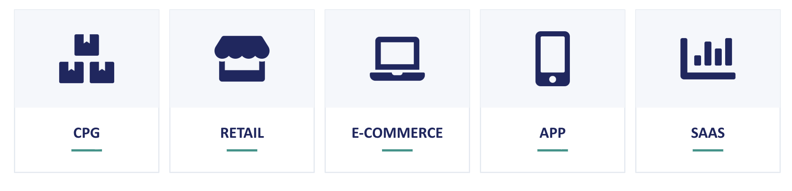

1.2 Marketingdaten verstehen
Über die deutsche Ausgabe
Diese Seite ist eine KI-Übersetzung der englischen Ausgabe von Marketing Science in Python. Die englische Ausgabe ist maßgeblich und hat bei Abweichungen Vorrang. Code, Notebooks und Text in Abbildungen bleiben auf Englisch. Englische Ausgabe lesen
Marketingdaten liegen selten in einer einzigen Tabelle. Sie stammen von Medienplattformen, Websites und Apps, aus Transaktionen, CRM-Systemen, Umfragen, Produkt- und Preissystemen sowie aus externen Quellen. Jede Quelle erfasst einen anderen Teil des Kundenverhaltens, auf einer anderen Detailebene und mit anderen blinden Flecken.
Dieser Abschnitt nutzt den Marketing-Funnel als Landkarte dessen, was gemessen werden kann, und betrachtet dann die Datensätze und Geschäftsumfelder hinter diesen Messungen. Zum Schluss geht es um drei Eigenschaften, die Marketingdaten besonders schwer interpretierbar machen.
Der Marketing-Funnel
Kunden kaufen selten beim ersten Kontakt. Sie bewegen sich (manchmal über Monate, manchmal in Minuten) von „nicht wissen, dass die Marke existiert“ über „kaufen“ zu „wieder kaufen“. Das gängigste Modell dieser Reise ist der Funnel:
Awareness → Consideration → Conversion → Retention
Am oberen Ende des Funnels stützen wir uns oft auf indirekte oder aggregierte Signale wie Reichweite, Impressions und Markenbekanntheit. Weiter unten im Funnel lässt sich das Verhalten leichter direkt beobachten: über Besuche, Käufe, Wiederholungskäufe und Transaktionen auf Kundenebene.

KPIs entlang des Funnels
Jede Stufe des Funnels bringt einen anderen Satz von Kennzahlen mit sich.
| Funnel-Stufe | Typische KPIs | Was sie messen |
|---|---|---|
| Awareness | Reichweite, Impressions, gestützte / ungestützte Markenbekanntheit, Share of Voice | Ob die Leute wissen, dass es Sie gibt |
| Consideration | CTR (Klickrate), Website-Besuche, Verweildauer, Suchvolumen, Lift bei Markensuchen | Ob die Leute Sie in Betracht ziehen |
| Conversion | CVR (Conversion-Rate), CAC (Kundenakquisitionskosten), AOV (durchschnittlicher Bestellwert), ROAS (Return on Ad Spend) | Ob die Leute kaufen, und wie effizient |
| Retention | Wiederkaufrate, Churn-Rate, Retention-Kurve, CLV / LTV (Customer Lifetime Value), NPS (Net Promoter Score) | Ob die Leute wiederkommen |
Das Ziel ist nicht, jede Stufe des Funnels unabhängig zu optimieren. Die Verbesserung einer Kennzahl kann eine andere schlechter aussehen lassen. Wer zum Beispiel Reichweite oder Traffic ausweitet, holt oft mehr marginale Interessenten herein, was das Suchvolumen oder die Website-Besuche erhöhen und zugleich die Conversion-Rate senken kann. Ebenso kann die Senkung der CAC durch eine Verlagerung auf günstigere Kanäle oder breitere Zielgruppen Kunden bringen, die seltener wiederkommen, was Wiederkaufrate oder CLV drückt. Entscheidend ist, ob der Funnel als Ganzes mehr Umsatz und Gewinn erzeugt.
Marketingdaten in verschiedenen Branchen
Dieselbe Marketingfrage kann je nach Geschäft sehr unterschiedlich aussehen.
Welche Daten verfügbar sind, und damit welche Methoden praktikabel sind, variiert erheblich zwischen den Branchen.

| Branche | Typische Daten | Relevante Methoden in diesem Buch |
|---|---|---|
| CPG | POS-Daten des Handels; Panel- und Umfragedaten; Media- und Trade-Spend | MMM; Inkrementalitätsexperimente; Umsatzprognose; Preiselastizität; Sortimentsoptimierung; Quasi-Experimente |
| Einzelhandel (stationär) | POS- und Loyalty-Daten; Bestände | Kundensegmentierung; CLV; Preiselastizität; Sortimentsoptimierung; Quasi-Experimente; Umsatzprognose |
| E-Commerce | Clickstream; Transaktionen; CRM; Mediadaten | A/B-Tests; Uplift-Modeling; Segmentierung und CLV; Umsatzprognose |
| Consumer-App | Akquisitionsdaten; In-App-Verhalten; Abonnements oder Käufe | A/B-Tests; Uplift-Modeling; CLV; Kausalinferenz |
| SaaS | Produktnutzung; CRM; Abrechnung; Support-Daten | A/B-Tests; CLV; Pricing; Umsatzprognose |
Diese Unterschiede sind wichtig, weil sie verändern, wie eine Analyse aufgebaut werden kann.
Ein E-Commerce- oder App-Unternehmen kann eine Botschaft oder ein Produkterlebnis oft auf Nutzerebene randomisieren und das Ergebnis direkt beobachten. Im stationären Einzelhandel ist ein A/B-Test auf Filialebene schwieriger, weil sich Filialen in Kundenfrequenz, Kundenmix, Sortiment, Lage und lokalen Bedingungen unterscheiden, was saubere Vergleiche zwischen Treatment und Kontrolle erschwert.
Ein CPG-Hersteller steht womöglich vor einer weiteren Einschränkung: Ein Großteil der Kaufdaten wird von Händlern erzeugt und nicht von der Marke selbst, sodass die direkte Beobachtung auf Kundenebene begrenzt sein kann.
Warum Marketingdaten schwierig sind
Bis hierhin mögen die Datensätze wie vertraute Data-Science-Eingaben aussehen: Tabellen, die man sammelt, verknüpft, bereinigt und modelliert.
Das schwierigere Problem ist, wie diese Daten entstanden sind.
Drei Eigenschaften tauchen in der Marketingarbeit immer wieder auf.

Eigenschaft 2: Die Daten sind unordentlich
Marketingdaten werden nicht für eine kontrollierte Forschungsstudie erzeugt. Sie entstehen im realen Geschäftsbetrieb.
Das Tracking bricht ab. Ereignisse fehlen. Kennzahlen werden auf verschiedenen Plattformen unterschiedlich definiert. Einheiten und Aggregationsebenen passen nicht zusammen. APIs, Attributionsregeln und Benutzeroberflächen ändern sich im Laufe der Zeit.
Deshalb erfordern selbst einfache Fragen oft Urteilsvermögen, bevor sie Modellierung erfordern. Saubere Analyse hängt nicht nur von statistischem Können ab, sondern auch von sorgfältiger Datenvalidierung und einem klaren Verständnis dafür, wie die Daten erzeugt wurden.
Eigenschaft 3: Alles passiert gleichzeitig
In realen Marketingsystemen wirken mehrere Touchpoints gleichzeitig. Suche, TV, Social Media, E-Mail, Promotions, Preise und Distribution bewegen sich oft gemeinsam statt unabhängig voneinander.
Das macht es schwerer, Ursache und Wirkung zu trennen. Wenn der Umsatz steigt, verraten die Daten allein womöglich nicht, welcher Aktivität der Verdienst gebührt. In der Sprache der Modellierung sind die Signale verflochten; in der Sprache des Geschäfts haben sich mehrere Maßnahmen gleichzeitig geändert.
Das sind keine Gründe, auf Analyse zu verzichten. Es sind Erinnerungen daran, vorsichtig, skeptisch und präzise zu sein, was die Daten tragen können.